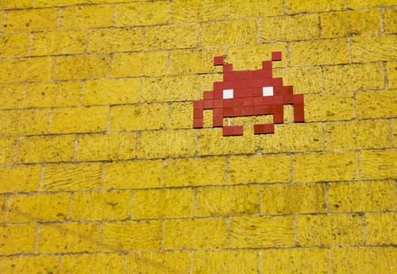

A evolução dos consoles na era digital

Entenda como foi o processo que levou a criação dos consoles de bolso da atualizade
Quem somos?
Retiramos nosso conteúdo de outros sites e sintetizamos a informação para levar você com a melhor qualidade possível, segue os documentos para a criação desse artigo.
Asseguramos a veracidade das informações aqui já citadas, o propagação de fake-news não faz parte dos nossos valores como corporação